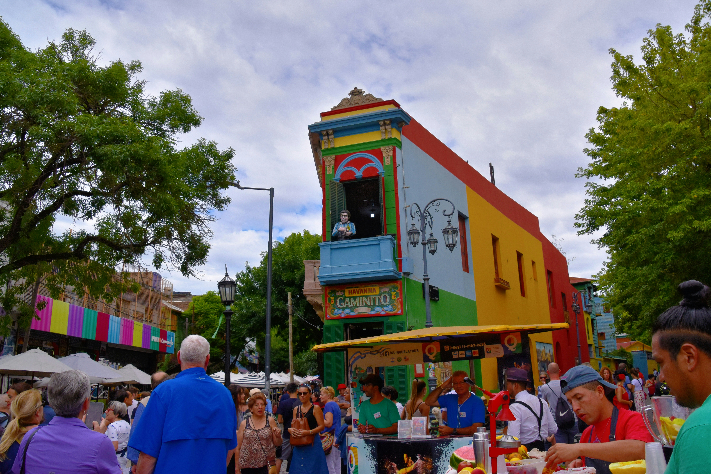

Bienvenidos a Aires Buenos
La ciudad de Aires Buenos es una ciudad con bonitos lugares de interés.
Y que en cada uno puede hacer actividades en familia.
Una de nuestras identidades y propuestas culturales es el tango.
Estas son algunas de las cosas maravillosas que puedes hacer en la ciudad de Aires Buenos.
Algunos de nuestros lugares de interés
La Casa Rosada
Caminito de Falta Envido

Actividades
Algunas de las actividades que puedes hacer en Aires Buenos
- Visitar el Museo del Falta Envido.
- Sacarse fotos con la estatua de la Pantera.
Propuestas culturales
- Funciones de tango y actuación
- Artes escénicas